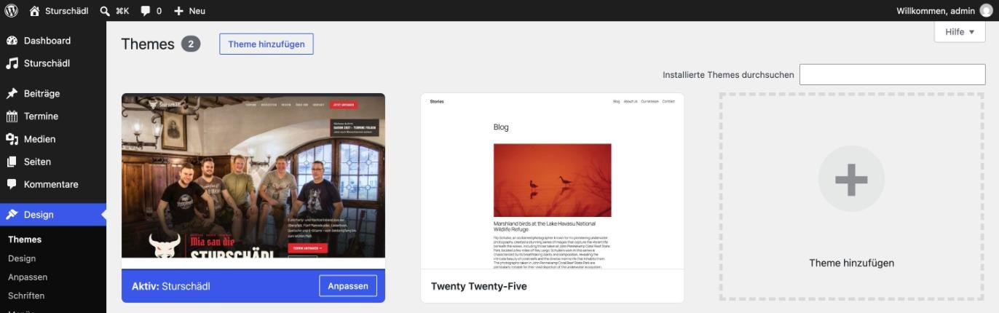
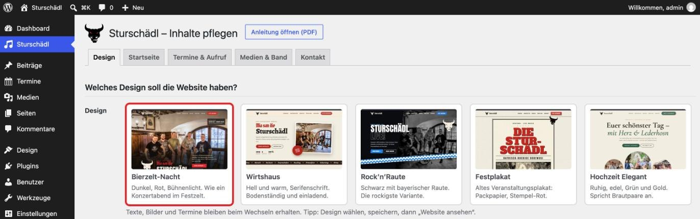
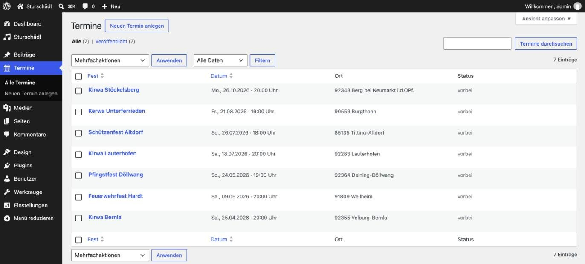
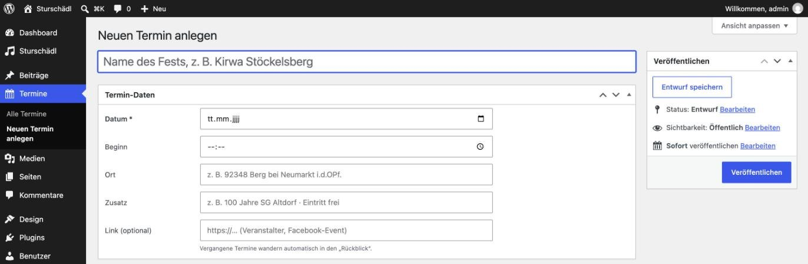
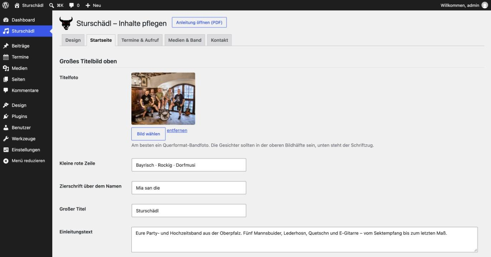
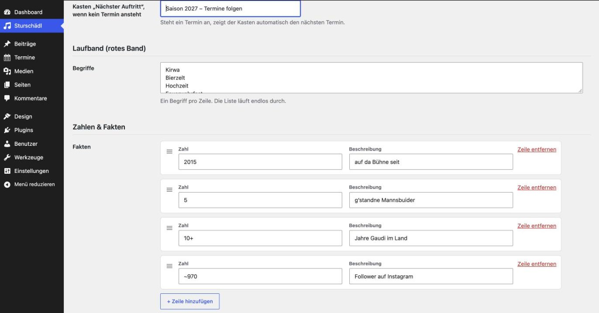
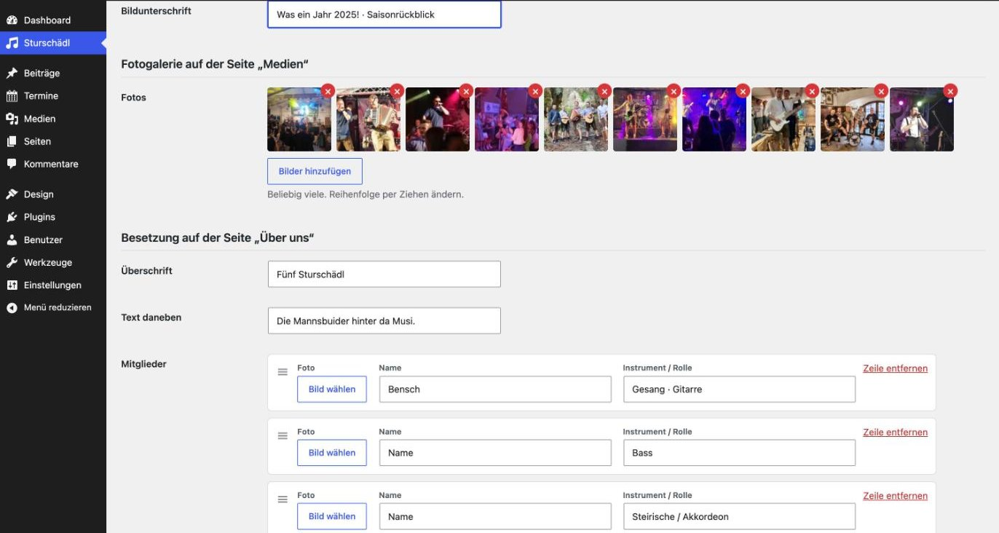
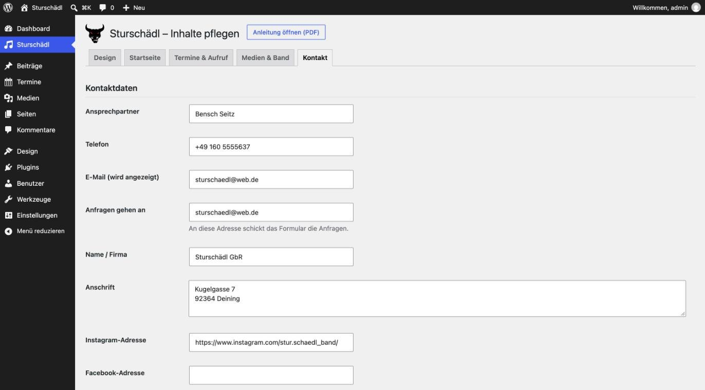

Die Anleitung ist in nummerierte Teile gegliedert (siehe Inhalt unten). Innerhalb eines Teils sind die Schritte nummeriert und werden der Reihe nach erledigt. Unter vielen Schritten steht in einem grünen Kasten, was Sie danach auf dem Bildschirm sehen – so können Sie jederzeit prüfen, ob alles stimmt.
Wörter in einem Rahmen wie Speichern sind Knöpfe oder Menüpunkte, die Sie anklicken. Text in grauer Schrift wie sturschaedlband.de tippen Sie genau so ab.
Was Sie brauchen
Einen Computer oder Laptop mit Internet (ein Handy reicht für die Einrichtung nicht).
Das Paket sturschaedl-wordpress-paket.zip. Darin liegen das Theme sturschaedl-theme.zip, diese Anleitung und Vorschaubilder (siehe Teil 4).
Eine WordPress-Website mit Zugangsdaten: Internetadresse, Benutzername, Passwort. Noch keine vorhanden? Dann zuerst Teil 2.
Etwa eine Stunde Zeit für die Einrichtung. Die spätere Pflege (z. B. ein neuer Termin) dauert nur wenige Minuten.
Inhalt
1Begriffe kurz erklärt
2WordPress beim Anbieter einrichten
3Im WordPress-Bereich anmelden
4Das Theme installieren
5Design auswählen und wechseln
6Die Website ansehen
7Termine eintragen und ändern
8Startseite und Laufband ändern
9Fotos, Video und Besetzung
10Kontaktdaten und Anfrageformular
11Seiten, Impressum, Datenschutz
12Das Menü ändern
13Wenn etwas nicht klappt
14Checkliste vor dem Freischalten
1
Begriffe kurz erklärt
Diese Wörter kommen in der Anleitung immer wieder vor.
Begriff
Bedeutung
WordPress
Ein kostenloses Programm, mit dem man Websites erstellt und pflegt. Es läuft beim Anbieter (siehe „Hosting“), man bedient es im Internet-Browser.
Hosting / Anbieter
Die Firma, auf deren Computern die Website liegt, z. B. IONOS, Strato oder All-Inkl. Kostet meist 3–10 € im Monat.
Domain
Die Internetadresse, z. B. sturschaedlband.de.
Backend (Verwaltungsbereich)
Der nicht öffentliche Bereich von WordPress, in dem man alles einstellt. Erreichbar über die Adresse der Website plus /wp-admin. Links ist ein dunkles Menü.
Website / Frontend
Das, was Besucher sehen.
Theme
Das „Kleid“ der Website: Aussehen und Aufbau. Das Theme „Sturschädl“ enthält alle fünf Entwürfe.
Design
Einer der fünf Entwürfe innerhalb des Themes (Bierzelt-Nacht, Wirtshaus, Rock’n’Raute, Festplakat, Hochzeit Elegant).
Mediathek
Der Bilder-Speicher von WordPress. Jedes Foto wird einmal hochgeladen und kann dann überall ausgewählt werden.
Plugin
Eine Zusatzfunktion zum Nachrüsten, z. B. für den sicheren E-Mail-Versand.
Reiter
Die Karteikarten-Überschriften oben auf einer Seite (z. B. „Design“, „Startseite“, „Kontakt“). Ein Klick darauf zeigt den jeweiligen Bereich.
Speichern / Veröffentlichen
Änderungen werden erst wirksam, wenn man auf Änderungen speichern, Veröffentlichen oder Aktualisieren klickt.
2
WordPress beim Anbieter einrichten
Nur nötig, wenn es noch keine WordPress-Website gibt.
Die bisherige Seite läuft bei Wix. WordPress braucht einen eigenen Anbieter. Die meisten Anbieter installieren WordPress mit wenigen Klicks; die Menüs sehen je nach Anbieter etwas anders aus.
1
Paket auswählenAuf der Seite des Anbieters (z. B. IONOS, Strato, All-Inkl) ein Paket mit dem Namen „WordPress-Hosting“ wählen. Das kleinste Paket genügt.
2
BestellenPaket bestellen. Bei der Frage nach einer Domain zunächst die vorgeschlagene Gratis- oder Test-Adresse nehmen – die echte Adresse sturschaedlband.de wird erst am Ende umgezogen (siehe Kasten unten).
3
WordPress installierenIm Kundenbereich des Anbieters den Punkt WordPress installieren (oder „Neue WordPress-Website“) anklicken und dem Assistenten folgen. Sprache: Deutsch.
4
Zugangsdaten notierenAm Ende zeigt der Anbieter drei Angaben an. Schreiben Sie diese auf und bewahren Sie sie sicher auf: • Adresse des Verwaltungsbereichs (endet auf /wp-admin) • Benutzername • Passwort
Domain erst ganz am Ende umziehenSolange die neue Seite nicht fertig ist, bleibt sturschaedlband.de bei Wix – so ist die alte Seite weiter erreichbar. Wenn alles fertig ist: bei Wix im Bereich Domains die Domain zum Übertragen freigeben und den Auth-Code (Übertragungscode) anzeigen lassen; beim neuen Anbieter „Domain umziehen“ wählen und den Code eingeben. Das dauert meist einige Stunden bis wenige Tage. Das Wix-Abo erst kündigen, wenn der Umzug abgeschlossen ist. Der Support des neuen Anbieters hilft dabei gerne.
3
Im WordPress-Bereich anmelden
1
Browser öffnenChrome, Firefox, Edge oder Safari öffnen.
2
Adresse eintippenOben in die Adresszeile die Adresse der Website eintippen und /wp-admin anhängen, z. B. sturschaedlband.de/wp-admin. Taste Enter drücken.
3
AnmeldenBenutzername und Passwort eintragen und auf Anmelden klicken.
Links ist ein dunkles Menü mit Punkten wie „Dashboard“, „Beiträge“, „Medien“, „Seiten“, „Design“. Das ist das Backend.
TippLegen Sie sich die Adresse …/wp-admin als Lesezeichen an. Dann reicht künftig ein Klick.
4
Das Theme installieren
Wird nur einmal gemacht.
Vorher: das Paket auspackenDas Paket sturschaedl-wordpress-paket.zip einmal entpacken – Windows: rechte Maustaste → Alle extrahieren… → Extrahieren; Mac: Doppelklick. Im entstandenen Ordner liegt die Datei sturschaedl-theme.zip. Diese Datei NICHT entpacken – WordPress braucht sie genau so als ZIP.
1
Themes öffnenIm linken Menü mit der Maus auf Design zeigen und dann auf Themes klicken.
2
Neues Theme hinzufügenOben neben der Überschrift „Themes“ auf Theme hinzufügen klicken.
3
Hochladen wählenOben neben „Themes hinzufügen“ auf Theme hochladen klicken.
In der Mitte erscheint ein Kasten mit dem Knopf „Datei auswählen“.
Datei auswählenAuf Datei auswählen klicken, die Datei sturschaedl-theme.zip suchen (meist im Ordner „Downloads“) und auf Öffnen klicken.
5
InstallierenAuf Jetzt installieren klicken und kurz warten.
Die Meldung „Das Theme wurde erfolgreich installiert.“
Meldung „Das Hochladen ist fehlgeschlagen“ oder „Datei zu groß“?Manche Anbieter erlauben nur kleine Dateien. Dann im Kundenbereich des Anbieters die „maximale Upload-Größe“ erhöhen (Suchbegriff: upload_max_filesize) oder den Support bitten. Die Datei ist etwa 4 MB groß.
6
AktivierenAuf Aktivieren klicken. Das Theme richtet sich jetzt selbst ein: Es legt alle Seiten, das Menü, die Fotos und die Termine von 2026 an. Das kann einige Sekunden dauern.

Fertig: „Aktiv: Sturschädl“. Links im Menü gibt es jetzt die Punkte „Sturschädl“ und „Termine“.
5
Design auswählen und wechseln
Jederzeit möglich. Texte, Termine und Bilder bleiben erhalten.
Einstellungen öffnenIm linken Menü auf Sturschädl klicken (direkt unter „Dashboard“, mit einem Noten-Symbol).
Die Seite „Sturschädl – Inhalte pflegen“ mit den Reitern Design, Startseite, Termine & Aufruf, Medien & Band, Kontakt.
2
Reiter „Design“Der Reiter Design ist bereits geöffnet. Sie sehen fünf Bilder nebeneinander – das sind die fünf Designs. Das aktuelle Design hat einen roten Rahmen.

Sturschädl → Design. Oben rechts neben der Überschrift öffnet „Anleitung öffnen (PDF)“ diese Anleitung.
3
Design anklickenAuf das Bild des gewünschten Designs klicken. Der rote Rahmen springt auf dieses Bild.
4
SpeichernMit dem Mausrad ganz nach unten scrollen und auf den blauen Knopf Änderungen speichern klicken.
Oben erscheint der grüne Hinweis „Die Einstellungen wurden gespeichert.“
Ganz unten auf der Seite: „Änderungen speichern“. Den Knopf „Fehlende Inhalte einspielen“ brauchen Sie normalerweise nicht.
5
Ergebnis ansehenWie Sie die Website ansehen, steht in Teil 6.
Häufiger FehlerNur das Bild anzuklicken reicht nicht – ohne Änderungen speichern bleibt das alte Design. Außerdem: Den Menüpunkt Design → Themes im linken Menü nicht zum Wechseln benutzen. Dort muss „Sturschädl“ aktiv bleiben.
Die fünf Designs
Bierzelt-Nacht Dunkel, Rot, Bühnenlicht. Mit Kasten „Nächster Auftritt“.
Wirtshaus Hell und warm, Serifenschrift, runde Knöpfe.
Rock’n’Raute Schwarz mit blau-weißer Raute. Die rockigste Variante.
Festplakat Wie ein altes Veranstaltungsplakat: Packpapier, Stempel-Rot.
Hochzeit Elegant Ruhig, Grün und Gold. Spricht Brautpaare an. Nutzt zwei Zusatzbilder (Reiter „Design“ → „Zusatzbilder“).
6
Die Website ansehen
1
Zur WebsiteGanz oben links in der schwarzen Leiste mit der Maus auf das Haus-Symbol mit dem Namen „Sturschädl“ zeigen und Zur Website anklicken. Tipp: Mit gedrückter Strg-Taste (Mac: ⌘) öffnet sich die Website in einem neuen Tab, und das Backend bleibt offen.
2
Neu laden, falls nötigZeigt die Website noch das alte Aussehen: Seite neu laden mit Strg + F5 (Mac: ⌘ + ⇧ + R).
3
Zurück ins BackendOben links auf den Namen „Sturschädl“ zeigen und Dashboard anklicken – oder wieder die Adresse mit /wp-admin aufrufen.
Gut zu wissenSolange Sie angemeldet sind, sehen Sie auf der Website oben eine schwarze Leiste. Besucher sehen diese Leiste nicht.
7
Termine eintragen und ändern
Die häufigste Aufgabe – dauert zwei Minuten.
Neuen Termin eintragen
1
Termine öffnenIm linken Menü auf Termine klicken.
Eine Liste aller Termine mit Fest, Datum, Ort und Status („kommend“ oder „vorbei“).

Termine → Liste. Ein Klick auf „Datum“ sortiert nach Datum.
2
Neuer TerminOben auf Neuen Termin anlegen klicken.
3
Name des FestsIn das große Feld oben den Namen eintragen, z. B. Kirwa Stöckelsberg.
4
Termin-Daten ausfüllenDatum (Pflicht): ins Feld klicken und Tag, Monat, Jahr eintippen oder im Kalender wählen. Beginn: Uhrzeit, z. B. 20:00. Ort: z. B. 92348 Berg bei Neumarkt. Zusatz und Link sind freiwillig.

Neuen Termin anlegen: Name oben, Daten darunter, rechts „Veröffentlichen“.
5
VeröffentlichenRechts auf den blauen Knopf Veröffentlichen klicken.
Der Termin steht sofort auf der Website: auf der Startseite, auf der Seite „Termine“ und – beim Design Bierzelt-Nacht – im Kasten „Nächster Auftritt“.
AutomatischNach dem Datum rutscht ein Termin von selbst in den „Rückblick“. Er muss nicht gelöscht werden.
Termin ändern oder löschen
1
Termin öffnenTermine → auf den Namen des Fests klicken.
2
ÄndernAngaben ändern und rechts auf Aktualisieren klicken.
3
LöschenRechts auf In den Papierkorb verschieben klicken.
Die Zeile „Euer Fest?“
Über den Terminen steht eine Einladung „Euer Fest? – Saison 2027 wird grad geplant“. Ein- und ausschalten und den Text ändern: Sturschädl → Reiter Termine & Aufruf, danach Änderungen speichern. Im selben Reiter steht auch der Text des dunklen Aufruf-Bands „Lasst’s scheppern!“.
8
Startseite und Laufband ändern
Alle Texte und Bilder der Startseite stehen unter Sturschädl → Reiter Startseite, von oben nach unten in der gleichen Reihenfolge wie auf der Website.
Ein Bild austauschen
1
Bild wählenUnter dem Bild auf Bild wählen klicken. Es öffnet sich die Mediathek.
2
Neues Foto hochladen (falls nötig)Oben auf Dateien hochladen klicken und das Foto vom Computer in das Fenster ziehen – oder auf Dateien auswählen klicken.
3
ÜbernehmenDas Foto anklicken (es bekommt einen blauen Haken) und unten rechts auf Übernehmen klicken.
4
SpeichernGanz unten Änderungen speichern.

Reiter „Startseite“: Titelfoto und die Texte oben auf der Startseite.
Tipp für das TitelfotoEin Bandfoto im Querformat, auf dem die Gesichter in der oberen Bildhälfte sind – unten steht der Schriftzug darüber.
Laufband (rotes Band mit den Begriffen)
1
Feld „Begriffe“ suchenIm Reiter Startseite nach unten zum Abschnitt „Laufband (rotes Band)“ scrollen.
2
Begriffe ändernEin Begriff pro Zeile. Neuer Begriff: ans Ende klicken, Enter drücken, Wort tippen. Begriff entfernen: Zeile markieren und löschen.
3
SpeichernGanz unten Änderungen speichern.

Laufband und „Zahlen & Fakten“. Mit „+ Zeile hinzufügen“ kommt eine Zeile dazu; am Griff ≡ links lässt sich die Reihenfolge ziehen.
Zahlen, Angebote, Instagram-Bilder
Zahlen & Fakten: Zahl und Beschreibung ändern. + Zeile hinzufügen oder Zeile entfernen.
Angebote: drei Bildkacheln mit Bild, Titel, Text und Zielseite.
Instagram-Kacheln: sechs Fotos. Bilder hinzufügen zum Ergänzen, rotes × zum Entfernen, Bilder mit der Maus verschieben, um die Reihenfolge zu ändern.
Nach jeder Änderung: Änderungen speichern. Jeder Reiter wird einzeln gespeichert – erst speichern, dann den Reiter wechseln.
9
Fotos, Video und Besetzung
Sturschädl → Reiter Medien & Band.

Reiter „Medien & Band“: Fotogalerie und Besetzung
Fotos für die Galerie
1
HinzufügenBilder hinzufügen klicken, in der Mediathek ein oder mehrere Fotos anklicken (oder neu hochladen) und Übernehmen.
2
Sortieren oder entfernenFotos mit der Maus an eine andere Stelle ziehen. Das rote × entfernt ein Foto aus der Galerie (es bleibt in der Mediathek).
3
SpeichernÄnderungen speichern.
Besetzung (Seite „Über uns“)
Je Mitglied: Bild wählen für das Foto, Name und Instrument eintragen. Ohne Foto erscheint der Stierschädel. Danach Änderungen speichern.
Video
1
Adresse kopierenDas Video bei YouTube öffnen, oben die Adresse in der Adresszeile markieren und kopieren (Strg + C, Mac: ⌘ + C).
2
EinfügenIns Feld „YouTube- oder Vimeo-Adresse“ klicken und einfügen (Strg + V, Mac: ⌘ + V). Änderungen speichern.
10
Kontaktdaten und Anfrageformular
Sturschädl → Reiter Kontakt. Diese Angaben erscheinen in der Fußzeile und auf der Seite „Kontakt“.

Reiter „Kontakt“. Wichtig: „Anfragen gehen an“ – an diese Adresse schickt das Formular.
Damit Anfragen sicher ankommen
WordPress verschickt E-Mails ohne Zusatz oft unzuverlässig. Deshalb einmalig das kostenlose Plugin „WP Mail SMTP“ einrichten:
1
Plugin suchenLinkes Menü Plugins → Neues Plugin hinzufügen. Rechts ins Suchfeld WP Mail SMTP tippen.
2
InstallierenBeim Eintrag „WP Mail SMTP by WPForms“ auf Jetzt installieren und danach auf Aktivieren klicken.
3
AssistentDer Einrichtungs-Assistent startet. Den E-Mail-Anbieter der Band auswählen (z. B. „Other SMTP“ für web.de) und die Daten eintragen, die der E-Mail-Anbieter dafür nennt (Postausgangsserver, Benutzername, Passwort des E-Mail-Kontos).
4
TestenAuf der Website die Seite „Kontakt“ öffnen, das Formular mit eigener E-Mail-Adresse ausfüllen und absenden.
Auf der Website steht „Vergelt’s Gott! Eure Anfrage ist bei uns angekommen.“ und die Anfrage liegt kurz danach im Postfach.
Keine Mail erhalten? Spam-Ordner prüfen, die Adresse unter „Anfragen gehen an“ prüfen und im Plugin „WP Mail SMTP“ den Punkt „E-Mail-Test“ ausführen.
11
Seiten, Impressum, Datenschutz
Die Seiten „Hochzeiten“ und „Über uns“ enthalten freien Text, der direkt bearbeitet wird.
1
Seiten öffnenLinkes Menü Seiten → auf den Namen der Seite klicken.
Der Seiten-Editor: in der Mitte der Inhalt, rechts eine Seitenleiste mit Einstellungen.
2
Text ändernIn den Text klicken und wie in einem Schreibprogramm tippen.
3
Kopf der SeiteRechts in der Seitenleiste: Beitragsbild = Hintergrundfoto oben, Textauszug = Untertitel, Kasten „Seitenkopf (Sturschädl)“ = kleine rote Zeile und Zierschrift über dem Titel.
4
SpeichernOben rechts auf Speichern (bzw. Aktualisieren) klicken.
Pflicht vor dem Freischalten: Impressum und DatenschutzDie Seiten „Impressum“ und „Datenschutzerklärung“ enthalten nur Platzhalter in eckigen Klammern. Diese müssen mit echten Angaben gefüllt werden – z. B. mit einem kostenlosen Generator für Impressum und Datenschutzerklärung. Ohne vollständiges Impressum darf die Seite in Deutschland nicht online gehen.
Die Seiten „Termine“, „Medien“, „Über uns“ und „Kontakt“holen ihre Listen (Termine, Fotos, Besetzung, Formular) automatisch. Dort nur Kopf und ggf. Zusatztext ändern.
12
Das Menü ändern
Nur nötig, wenn Menüpunkte umbenannt oder ergänzt werden sollen.
1
Menüs öffnenLinkes Menü Design → Menüs.
2
Menü wählenOben bei „Wähle ein Menü zum Bearbeiten“ das gewünschte Menü auswählen (Hauptmenü, Fußzeile oder Rechtliches) und auf Auswählen klicken.
3
ÄndernNeue Seite: links Haken setzen → Zum Menü hinzufügen. Reihenfolge: Einträge mit der Maus ziehen. Umbenennen: auf den kleinen Pfeil am Eintrag klicken und „Angezeigter Name“ ändern.
4
SpeichernMenü speichern.
13
Wenn etwas nicht klappt
Problem
Lösung
Das Design ändert sich nicht.
Unten auf Änderungen speichern geklickt? Danach die Website mit Strg + F5 neu laden. Hat der Anbieter einen Zwischenspeicher („Cache“), diesen leeren.
Der Menüpunkt „Sturschädl“ fehlt links.
Das Theme ist nicht aktiv: Design → Themes → beim Theme „Sturschädl“ auf Aktivieren.
Seiten, Fotos oder Menü fehlen.
Sturschädl → Design → ganz unten Fehlende Inhalte einspielen. Vorhandenes wird dabei nicht verändert.
Ein neuer Termin erscheint nicht.
Ist ein Datum eingetragen? Wurde auf Veröffentlichen geklickt (nicht nur „Entwurf speichern“)?
Anfragen kommen nicht an.
Teil 10: Adresse prüfen, Plugin „WP Mail SMTP“ einrichten, Spam-Ordner prüfen.
Beim Klick auf eine Seite erscheint „Seite nicht gefunden“.

 Wirtshaus
Wirtshaus Rock’n’Raute
Rock’n’Raute Festplakat
Festplakat Hochzeit Elegant
Hochzeit Elegant